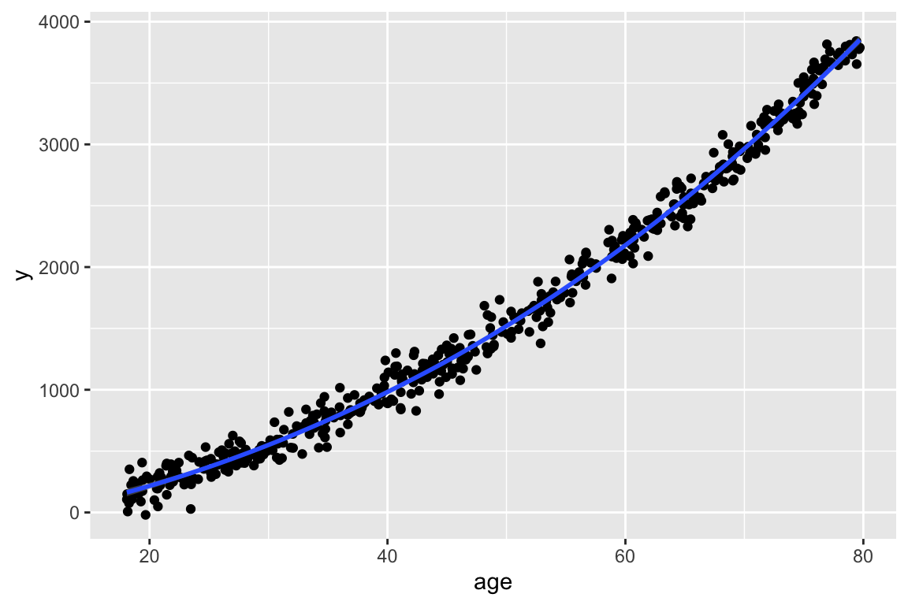

ggplot(df, aes(x = age, y = y)) + geom_point() + geom_smooth()
Lesson
February 26, 2025
Mmm good question! VIFs work for continuous and binary variables. So if your model only has continuous or binary covariates, then the VIFs and GVIFs are the same, and you can use either. The GVIFs are needed for multi-level covariates.
You can always center a value! There are two scenarios where centering is really helpful:
When we have an interaction. Centering makes coefficients more interpretable
When we have a transformation of the variable. Centering avoids issues with multicollinearity.
Here’s a pretty good video about the differences! About 8 minutes long, but easily played at 1.25/1.5 speed.
We would only have age and age-squared if we noticed the relationship between age and our outcome was not linear. For example, our plot could look like this:
And let’s say we see the following plot for age-squared:
Then we would make the transformation of age for our model. When we include age-squared in the model, we still need to include age. We can run the model with both:
And we can look at the regression table. Notice that the standard error of age and age-squared’s coefficients are okay, but the intercept’s standard error is really big.
| term | estimate | std.error | statistic | p.value | conf.low | conf.high |
|---|---|---|---|---|---|---|
| (Intercept) | −51.53 | 34.83 | −1.48 | 0.14 | −119.96 | 16.90 |
| age | 2.38 | 1.57 | 1.52 | 0.13 | −0.70 | 5.46 |
| age_sq | 0.58 | 0.02 | 36.52 | 0.00 | 0.55 | 0.61 |
We can also look at the VIF:
age age_sq
40.43877 40.43877 age age_sq
40.43877 40.43877 The VIFs are really big, so centering age will help the multicolinearity of the model.
Where age_c is age centered at the mean, and age_c_sq is the centered age squared.
| term | estimate | std.error | statistic | p.value | conf.low | conf.high |
|---|---|---|---|---|---|---|
| (Intercept) | 1,421.60 | 6.83 | 208.07 | 0.00 | 1,408.18 | 1,435.02 |
| age_c | 58.60 | 0.25 | 237.56 | 0.00 | 58.12 | 59.09 |
| age_c_sq | 0.58 | 0.02 | 36.52 | 0.00 | 0.55 | 0.61 |
age_c age_c_sq
1.001282 1.001282 Yay! The VIFs are much better now! And the intercept and age coefficient estimate have better standard error!